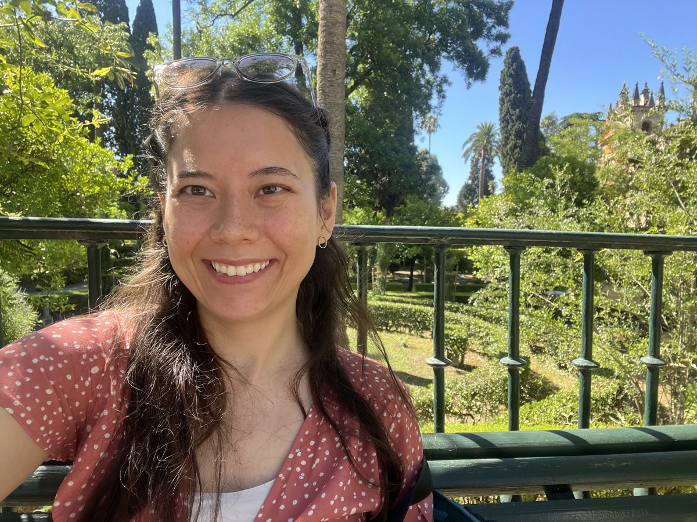
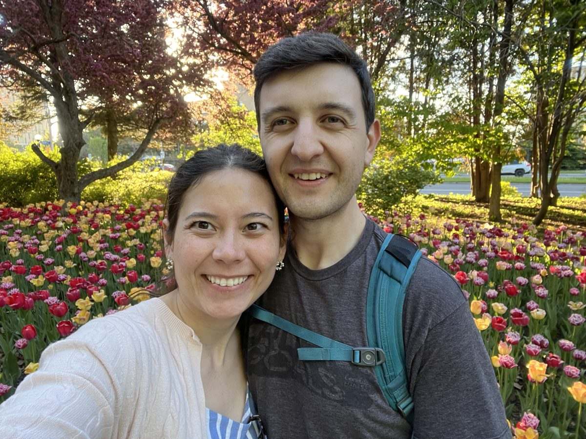
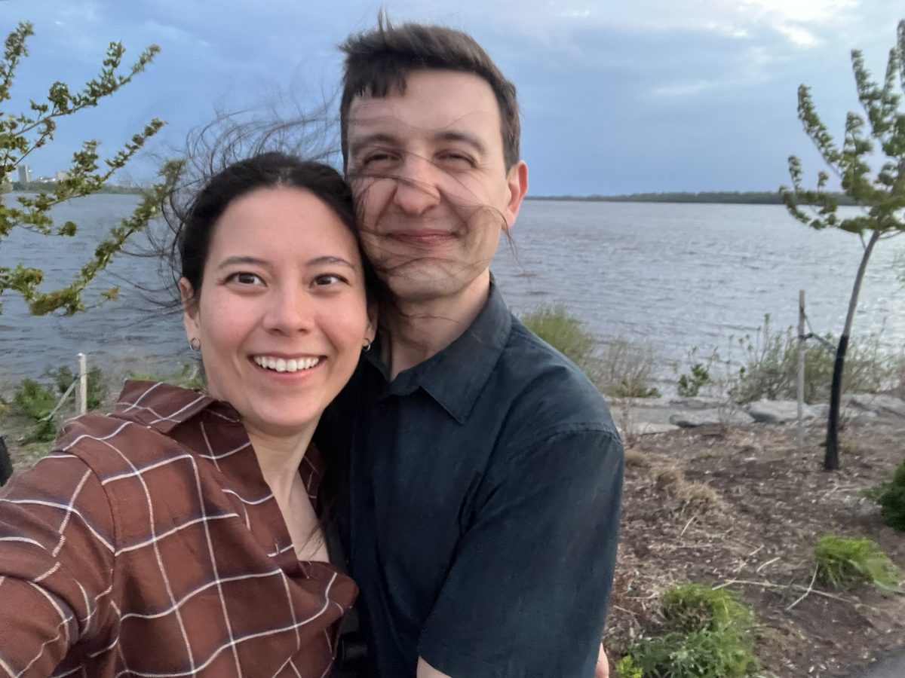
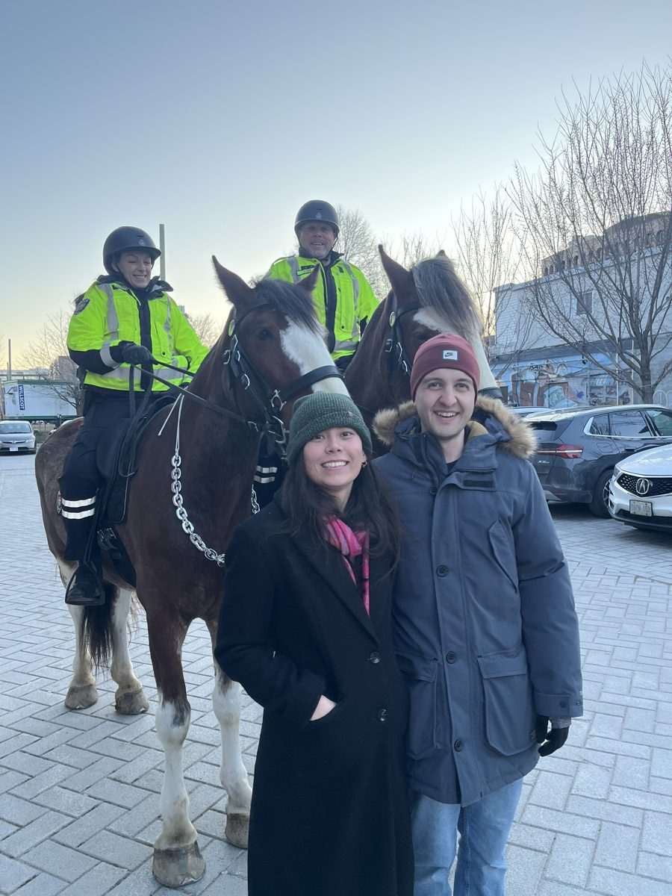

To my schwimp — the most beautiful peony in the whole garden 🌸
No. 01 — A Letter for You
Sam, I wanted to wish a Happy Birthday to my favourite person in the whole world! This is one of many gifts that I want to give you on your special day.
You are such a gift to me and everyone around. I'm so grateful to have you in my life and so happy to spend time together.
— Johnathan 💕
No. 02 — Make a Wish
(tap the candles to blow them out)
No. 03 — The Schwimp Archives




No. 04 — Eight Reasons
(tap a card, schwimpy)
No. 05 — The Committee
The Council of the Bumbles, the Rats, and the Schwimps has gathered on this very special day to deliver one extremely important question...
(they practiced all week, please don't make them sad)
No. 06 — The Big Question
Will you go on a date with me?
But first — what do we call each other?
You found the secret 💌
Sam — of course you found this. You're the smart one.
I wanted one little corner of this page to be just for you, away from everyone else. So here it is, just between us: you are the best thing that has ever happened to me. You make the ordinary days my favourite days, and every plan better just by being in it.
However many birthdays we get to celebrate, I'll spend every single one trying to make you feel as loved as you make me feel.
Happy birthday, my schwimp. I love you more than all the shrimps in the sea.
— your Johnathan 🦐💕